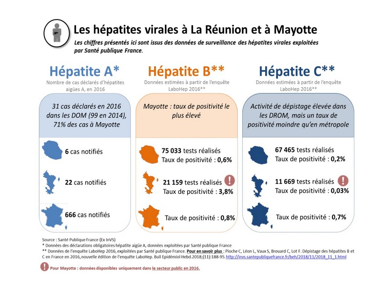

Les Hepatites Virales
VIRUS DIFFéRENTS Les hépatites constituent à l'heure actuelle un énorme problème de santé publique. On estime qu'il y a dans le monde 300 millions de personnes infectées par le virus de l'hépatite B. Cette affection virale serait responsable de deux millions de décès chaque année, et elle concernerait environ 5% de la population mondiale. L'hépatite est la neuvième cause de mortalité...
COMPRENDRE
Les hépatites virales sont des maladies infectieuses du foie liées à la présence et à la prolifération d'au moins cinq virus différents. Ces virus entraînent des manifestations aiguës pouvant évoluer de façon épidémique.
LES VIRUS
Actuellement, on connaît au moins cinq virus à l'origine des hépatites virales. Les recherches en identifieront d'autres.
- virus A
: transmis par les selles, il ne présente pas de risque d'évolution chronique, et les cas d'hépatite grave provoqués par ce virus sont très rares (un cas sur 100 000).- Le virus B :
il est transmis par le sang, les sécrétions sexuelles, la salive et, éventuellement, la morsure. Le risque d'hépatite grave (hépatite fulminante) est plus important (un cas sur 1 000).- Le virus C :
transmis de la même façon que le virus B, son évolution chronique comporte un risque de cirrhose et de cancer élevé : environ 50% des atteintes. Le risque d'hépatite fulminante concerne un cas pour 10 000.- Le virus D ou agent delta :
de transmission analogue, il provoque beaucoup d'hépatites aiguës ou chroniques dans de nombreuses parties du monde. Il ne se multiplie qu'en présence de virus B, et se manifeste lors d'une infection à virus B ou par surinfection d'une hépatite B. En cas de surinfection, le risque de passage à la chronicité est élevé (80%) et le risque d'hépatite grave atteint un cas sur 10. - Le virus E : transmis par les boissons et les aliments contaminés, sans évolution chronique, il est responsable d'épidémies surtout en Extrême et au Moyen-Orient avec un risque très élevé d'hépatite fulminante puisqu'il peut concerner un patient infecté sur cinq, en particulier les femmes en fin de grossesse.LA TRANSMISSION DES VIRUS
transmission par la bouche
(transmission dite oro-fécale) concerne les hépatites A et E. L'ingestion d'eau ou d'aliments souillés par des matières fécales contenant des virus éliminés par des sujets infectés mais n'ayant pas encore développé la maladie permet la transmission à d'autres individus. Ce mode de transmission est surtout fréquent dans les régions où les réseaux d'assainissement sont insuffisants ou inexistants, en particulier dans les pays en voie de développement. Dans les pays industrialisés comme la France, les épidémies sont dues souvent à l'ingestion de fruits de mer ramassés dans des eaux contaminées par les égouts. La transmission peut se faire aussi de personne à personne dans des collectivités, en raison des manques fréquents d'hygiène : crèches, garderies, écoles, casernes, famille. - La transmission par voie sanguine et à travers la peau concerne surtout l'hépatite B et l'hépatite non A non B (c'est-à-dire pour les virus C, D, E). Elle affecte surtout les toxicomanes qui se font des injections intraveineuses de drogues en réutilisant les aiguilles et les seringues déjà contaminées. Le risque de transmission par transfusion est pratiquement nul pour le virus B, depuis sa détection obligatoire chez les donneurs de sang en 1971, et, pour la même raison, pour le virus C, depuis 1990. - La transmission périnatale est un facteur considérable de dissémination du virus B dans les pays en voie de développement. Si le nouveau-né est contaminé par la mère, le risque d'hépatite chronique est de 90%, avec évolution vers la cirrhose et/ou le cancer du foie avant l'Âge de quarante ans. En France, le dépistage chez les femmes enceintes est obligatoire au sixième mois depuis 1992. Ce risque de transmission est plus faible pour les autres hépatites. - La transmission sexuelle (sperme, sécrétions vaginales) existe pour les virus C, D et E. On peut considérer ces maladies comme des MST (Maladies sexuellement transmissibles). D'une façon générale, ces hépatites ont le même mode de contamination que le sida, ce qui explique qu'on les rencontre souvent dans les mêmes populations à risque (toxicomanes, homosexuels). L'hépatite peut également être transmise par le lait maternel, ainsi que par la salive pour le virus B, ce qui exige de prendre certaines précautions lors des soins dentaires.
RECONNAîTRE
L'incubation, c'est-à-dire la durée qui s'écoule entre la contagion et la déclaration de la maladie, est variable selon le virus en cause : de 15 à 30 jours pour le virus A, et de 6 semaines à 6 mois pour le virus B. Mais quel que soit le virus, les premiers signes de la maladie seront les mêmes. Le patient se plaint des troubles suivants : asthénie, troubles digestifs avec anorexie, nausées, dégoût du tabac, douleurs musculaires, parfois douleurs articulaires, fièvre, céphalées, éruption cutanée. De nombreux signes infectieux sont possibles, mais ils ne sont pas forcément tous présents.
LA JAUNISSE
Au bout de quelques jours apparaît la « jaunisse », une coloration jaune de la peau que l'on appelle plus scientifiquement un ictère. Il est d'intensité variable, avec des urines foncées et des selles blanches (index, Physiologie du foie). Lorsque l'ictère est discret, on remarque toutefois une coloration jaune du blanc de l'œil. Le prurit, fréquent dans l'ictère, est ici inconstant. Le foie est un peu douloureux à la palpation. On retrouve quelquefois une splénomégalie (grosse rate). La phase de régression est marquée par la disparition de tous ces signes, hormis l'asthénie, qui peut persister plusieurs semaines, voire plusieurs mois. L'hépatite se manifeste la plupart du temps par un ictère, mais pas toujours, ce qui vous intrigue souvent, mais il faut savoir que l'hépatite peut se révéler sous plusieurs formes : - la jaunisse peut être absente ; mais l'on trouve les autres signes cliniques, ainsi que l'élévation des transaminases dans le sang, qui orientent le médecin vers une atteinte hépatique ; - elle peut être chole statique (rétention) avec ictère intense et prolongé, prurit tenace, selles décolorées, urines foncées ; les signes de rétention de bile sont importants avec une augmentation importante du taux de bilirubine dans le sang, ainsi que des phosphatases alcalines et du cholestérol.
LES EXAMENS BIOLOGIQUES
Ils montrent des anomalies caractéristiques : - des signes de cytolyse (destruction des cellules du foie) avec élévation des transaminases, qui atteignent des taux de vingt à quarante fois plus forts que les taux normaux ; - des signes de rétention de la bile, avec élévation de la bilirubine (surtout la bilirubine conjuguée), mais rarement au-delà de 150 milligrammes par litre ; on retrouve un taux élevé de pigments biliaires dans les urines, et les phosphatases alcalines sont augmentées ; - des signes d'insuffisance cellulaire, avec baisse des facteurs de la coagulation, notamment la prothrombine (index, Examens complémentaires); - des signes inflammatoires : augmentation de la vitesse de sédimentation, élévation modérée des gamma et des bêta-globulines à l'électrophorèse des protéines ; - une baisse des leucocytes neutrophiles (index, Globules blancs), surtout au début de la maladie, ce qui est un signe d'infection virale.Tous ces signes biologiques ne sont pas forcément présents, sauf les signes de cytolyse, qui indiquent la destruction cellulaires et sont les plus constants.
LE BILAN IMMUNOLOGIQUE
On recherche le type du virus en réalisant un bilan immunologique (index, Immunologie) : - recherche de l'hépatite A par dosage des anticorps antivirus A IGM (anticorps précoces) et IGG (anticorps plus tardifs) ; - recherche de l'hépatite B par la mise en évidence de l'antigène HBS (virus B, ancien virus dit Australia), et des anticorps anti-HBS, anticorps anti-HBC IGM (précoces) et IGG (tardifs) ; - recherche de l'hépatite C par dosage d'anticorps antivirus C (apparaissant trois mois après le début de l'infection) ; - recherche de l'hépatite D par dosage des anticorps antivirus D et de l'antigène de l'hépatite D ; - recherche de l'hépatite E : elle a moins d'intérêt en raison de l'absence d'évolution sur un mode chronique.
L'éVOLUTION
Dans la grande majorité des cas, l'évolution se fait vers la guérison, surtout pour les hépatites A et E. Le pourcentage de guérison est de 90% pour l'hépatite B, avec un risque de 10% de passage à une forme chronique chez l'adulte. - L'hépatite à rechute se caractérise par l'apparition, après guérison clinique et biologique, de troubles identiques à la première poussée. - L'hépatite fulminante est une hépatite compliquée d'encéphalopathie hépatique survenant entre quinze jours et trois mois après le début de la maladie. Elle se caractérise par l'apparition de signes d'atteinte cérébrale et un coma. Une telle évolution est due à une destruction étendue du foie, qui n'est plus capable de jouer son rôle normal de filtre des différents toxiques de l'organisme, et le cerveau est intoxiqué. L'évolution est très grave, avec au moins 75% de mortalité. - L'hépatite chronique : les hépatites A et E n'évoluent pas vers des formes chroniques. En revanche, 10% des sujets qui font une hépatite B et 40 à 50% de ceux qui font une surinfection de l'hépatite B par le virus D, ainsi que 50% de ceux qui sont atteints par le virus C risquent de connaître une évolution vers l'hépatite chronique. Cette hépatite est marquée par une élévation modérée des transaminases au-delà du sixième mois après le début clinique de la maladie. Il existe, selon le type de virus, une persistance de l'antigène HBS, sans anticorps anti-HBS, et/ou des anticorps anti-HVC ou D. La ponction-biopsie du foie est, dans ce cas-là, un examen indispensable, qui consiste à prélever un tout petit morceau de foie, à l'aide d'une longue aiguille que l'on enfonce dans la glande hépatique à travers la peau (sous anesthésie locale). Cette ponction permet de distinguer : - une hépatite chronique persistante caractérisée par une inflammation ; les lésions de fibrose (le tissu normal est remplacé par du tissu fibreux ressemblant à une cicatrice) ou de nécrose sont discrètes ou absentes ; les signes cliniques sont discrets ou absents, compatibles avec une vie normale ; - une hépatite chronique active, avec des signes d'inflammation étendue ; l'examen microscopique permet également d'observer des signes importants de fibrose et de nécrose ; douleurs abdominales, poussées d'ictère et asthénie sont présents. Le risque d'évolution vers une cirrhose se caractérise cliniquement par des angiomes stellaires (éclatement des petits vaisseaux de la peau), parfois une ascite (épanchement de liquide dans la cavité abdominale), une splénomégalie (grosse rate), des varices œsophagiennes (index, Cirrhose du foie). Le risque potentiel de cancer du foie est important. 